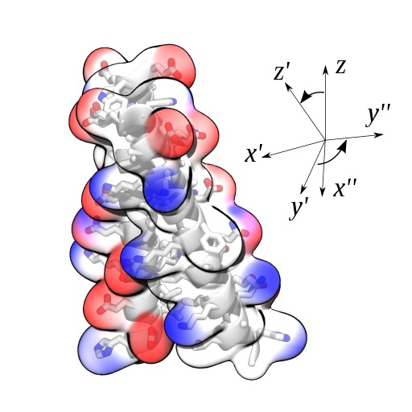

COLLECTIVE VARIABLES MODULE
Reference manual for VMD
Code version: 2020-11-30
 Alejandro Bernardin, Haochuan Chen, Jeffrey R. Comer, Giacomo Fiorin, Haohao Fu, Jérôme Hénin, Axel Kohlmeyer, Fabrizio Marinelli, Joshua V. Vermaas, Andrew D. White
(PDF version)